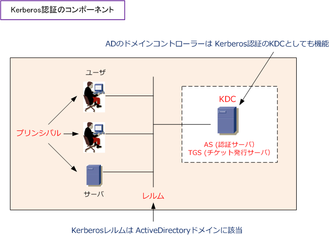
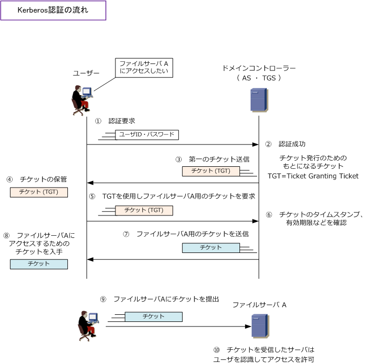
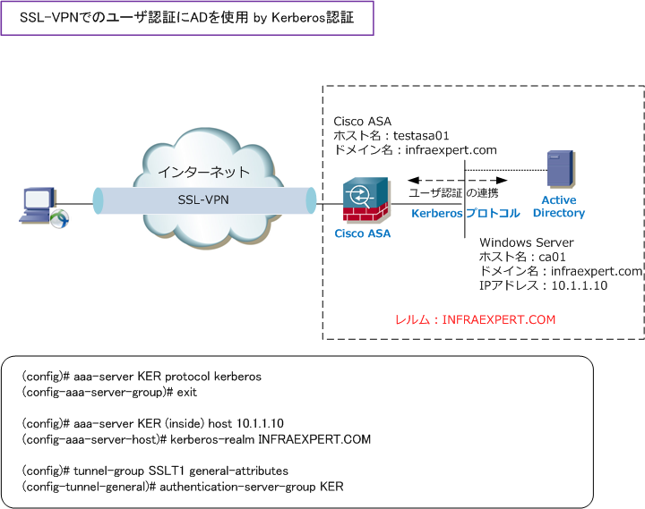
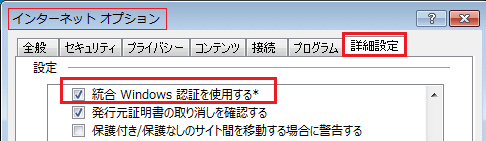

Kerberos Authentication
ケルベロス認証とは
ケルベロス認証とは、ネットワーク認証方式の1つでありサーバとクライアント間の身元確認のために使用 するプロトコルです。Kerberosはクライアントとサーバとを相互認証できるだけでなくデータ保全のために クライアントとサーバ間の通信を暗号化します。現在ではKerberosバージョン 5 が主に使用されています。 そのため、Kerberosは「 KRB5 」とも呼ばれています。
KerberosはWindows Server Active Directoryのユーザ認証の際に使用しているプロトコルとして有名です。 なお、Active Directoryは単一のサービスではなく、主な機能だけでも3つのプロトコルが使用されています。
| Active Directoryによる主なサービス | 使用するプロトコル |
|---|---|
| ユーザ認証 | Kerberos version 5 |
| ディレクトリサービス | LDAP version 3 |
| ファイル共有 | SMB version 1.0 / 2.x / 3.0 |
ケルベロス認証の構成要素
ケルベロス認証を理解するために、用語「KDC、AS、TGS、プリンシパル、レルム」を理解しましょう。

| ケルベロスの用語 | 説明 |
|---|---|
| KDC （ Key Distribution Center ） | サーバとユーザに関する信頼関係の情報を一括管理する中央データベース |
| AS （ Authentication Server ） | 認証サーバ。ユーザからの認証を受け付けるサーバ |
| TGS （ Ticket Granting Server ） | チケット発行サーバ。各サーバを利用するためのチケットを発行するサーバ |
| プリンシパル （ principal ) | KDCが認証を行うユーザやサーバのこと |
| レルム ( realm ) | 同じKDCの配下にあるシステムをグループとして定義する論理ネットワーク |
※ AD認証は、Kerberosプロトコルで行われており、ADのドメインコントローラーは、Kerberos的にはKDCとして機能。
ケルベロス認証の流れ
ケルベロス認証では、ユーザが正しいユーザIDとパスワードをAS（Authentication Server）に送信して認証に 成功するとTGS（Ticket Granting Server）からチケットと呼ばれるデータを受け取れます。ケルベロス認証は このチケットを認証に使用しています。サーバはアクセスしてくるユーザがアクセス権を持っているかどうかを ユーザIDとパスワードではなくチケット（ クライアントのID、タイムスタンプ、有効期限を含む ）を使用して 確認します。認証時にチケットを使用することでアカウント（ユーザ ID、パスワード）の漏洩を防いでいます。

Kerberos認証では、チケットの盗聴によるなりすましを防ぐために、時刻同期の仕組みが用意されています。 チケットの中にはタイムスタンプ（送信時刻）が記録されています。チケットを受信したサーバがチケットの タイムスタンプとサーバの持つ時刻と5分以上(ADの場合)のズレがあると認証に失敗するようになっています。 従ってNTPを使用して、チケット発行側の時計とチケット利用側の時計の時刻が同じになるようにしましょう。
Cisco ASA と Active Directory との連携 by ケルベロス認証
SSL-VPN接続のユーザ認証時に、Windows ADとCisco ASAとが連携してKerberos認証を行いたい場合、 以下の3項目をクリアすれば良いだけですので、ASAで設定するコンフィグはとてもシンプルになります。 WindowsではデフォルトでKerberosプロトコルがユーザ認証に使用されているので追加設定は不要です。 ※ ASAとActive Directory間では UDPポート番号：88 を使用して、Kerberos プロトコルがやりとり。

◇ レルムを指定 （ ドメイン名を大文字で指定 ） ⇒ kerberosプロトコルの規則に従って大文字で指定します。レルム名にはドメイン名を大文字で指定します。
◇ Cisco ASAとWindows Serverのタイムゾーンと時刻を合わせる ⇒ 時刻同期に5分以上のズレがあると認証エラーとなるので、同じNTPサーバを指定していると確実です。
◇ Cisco ASAとWindows ServerとがTCPポート番号：88で通信できるようにする ⇒ Kerberosプロトコルで使用するポートだけではなく、ASA⇔AD間はIPレベルで通信できるのが望ましい。
Windows NT4.0以前のOSで標準で使用されていた ユーザ認証方式のことを、NTLM認証と言います。 NTLM認証はNT LAN Manager authenticationの略。
Windows2000以降についてはデフォルト認証方式に NTLM認証からKerberos認証を使用するようになって いますが旧環境との互換性維持のためにNTLM認証を 可能にしています。
一般的ではありませんがASAとADとが連携する際に NTLMを使用するためには、ASA側でプロトコル指定 にNT Domainを選択します（レガシーな設定です）
RadiusとKerberosの違い
Radiusは認証のための情報をRADIUSサーバが一元管理することで、ユーザーはどのサーバに対しても 同じユーザーIDとパスワードで認証を受けられる仕組みです。この点はKerberosプロトコルでも同じです。
Kerberosの場合は、複数のユーザが複数のサーバを利用するようなケースで、一度だけ認証を受ければ 複数のサービスを利用できるようになります。ユーザが複数のサーバを利用する場合において一度認証 を受ければ何度もログインしなくても、他のサーバへそのユーザのアクセス権に応じてアクセスできます。 以上の事から、Kerberos認証がSSO (シングルサインオン) を実装するために適している事が分かります。
※ KRB5 authentication disables user access when an incorrect password is entered.
統合Windows認証によるSSO
社内のイントラネットではSSOには統合Windows認証がよく使用されています。クライアント側の要件は ブラウザで統合Windows認証が有効状態であればOKです。IEの場合は以下をチェック（デフォルトの状態）

統合Windows認証により、社内のイントラサイト（Webサイト）参照時にユーザID/パスワードが求められ ないシステムを構築するが可能です。共有フォルダなどの参照はKerberosのSSOを生かす場合が多いです。
関連する認可技術：OAuth 2.0
OAuth 2.0 は利用者の許可に基づき、クライアントへ保護されたリソースへのアクセス権限を委譲する枠組みです。アクセストークンはリソースサーバへの要求に使います。リフレッシュトークンは期限切れなどの後に新しいアクセストークンを取得するため、認可サーバへ提示します。リフレッシュトークンをリソースサーバへ送ることはありません。ケルベロスのチケットとは用途と発行・提示先が異なります。